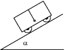

Una persona de 90 kg está dentro de un ascensor subido en una báscula sujeta al suelo, determina la lectura de esta en los siguientes casos:
a) Cuando el ascensor comience a bajar con aceleración 3 m/s2
b) Mientras el ascensor baje con velocidad constante de 4.5 m/s
c) Cuando el ascensor frene, al acercarse al piso pedido, con aceleración 2 m/s2
d) Si se rompe el cable del ascensor
En el interior de un ascensor, que se desplaza con velocidad constante, se encuentra un observador sobre una báscula anclada al suelo que marca 80 kp. El ascensor se detiene y el observador aprecia que la báscula ha llegado a marcar por un momento 90 kp. Indica razonadamente si el ascensor subía o bajaba y el valor de la aceleración de frenado.
Un tren arranca con aceleración 0,5 m/s2. Dentro del tren hay una bolita colgada de un hilo, determina el ángulo que formará el hilo con la vertical
 |
Determina la aceleración que deberá tener el plano inclinado liso de la figura para que el bloque se mantenga inmóvil sobre él. |
Una caja de embalaje de 40 kg se encuentra sobre la plataforma de un camión siendo el coeficiente de rozamiento entre ambos 0.3. Determina la magnitud y sentido de la fuerza de rozamiento que actúa sobre la caja cuando:
a) El camión arranca con aceleración 1.8 m/s2
b) El camión frena con deceleración 3 m/s2
 |
Sobre un plano inclinado de ángulo α se mueve un vehículo dentro del cual hay un péndulo colgando del techo. Sabiendo que el hilo del péndulo forma 90º con el techo calcula la aceleración del vehículo |
Un ascensor sube con aceleración g/20. Al detenerse, lo hace frenando con aceleración g/10. Dentro del ascensor hay un dinamómetro del que pende una masa m. Determina las indicaciones del dinamómetro en las dos fases del movimiento.
 |
Calcula la aceleración del carrito para que el bloque no caiga. Coeficiente de rozamiento entre bloque y pared vertical: μ |